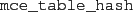
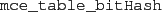

Tables
Tables records encountered
program states (typically using a hash table).
The following tables are implemented:
-

implements a hash table using an Erlang @ets@ table.
-
implements a hash table using an Erlang @dict@ data
structure, also storing actions between states.
-

implements a hash table where states are hashed into
an integer value, and there is no collision handling.
That the actual states themselves are not stored in
the table, only a bit indicating whether the table
entry contains an element or not.
Note that this algorithm is not currently
available under Windows as it relies on a HiPE private function
for efficiency,
which is not yet implemented on that operating system.
-
implements a hash table with a bounded maximum
size. If during verification
the size of the hash table has to be increased,
verification stops and McErlang returns an inconclusive result.
2010-07-05